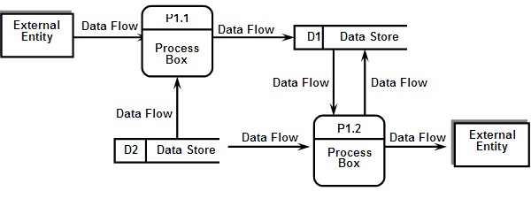
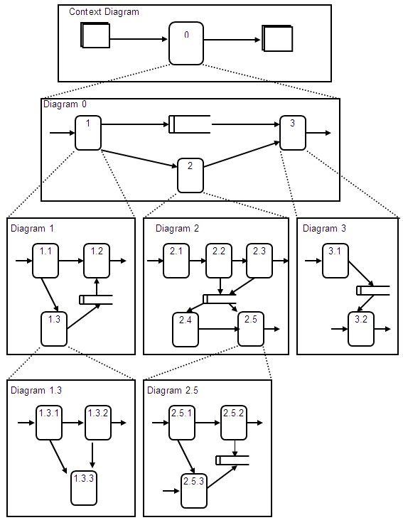

| Artifact: DFD Application Model
(APP 315)
|
|
 |
| This artifact is a representation of an application system depicting application functions, the data needed to support them, and the connective flows between functions and data. |
Domains: Design
Work Product Kinds: Model |
|
Purpose
This artifact enables the conducting of analysis and design work without losing sight of the essential
functions and objectives of the application.
Common uses of this work product include:
-
investigating current applications from a physical viewpoint to understand existing, data, processes, and, perhaps,
their limitations,
-
examining current applications from a logical viewpoint to understand fundamental business functionality by the
data centered approach,
-
documenting enhancements to an existing application or an entirely new application to understand new business
functionality by the data centered approach, and
-
representing a new or enhanced application from a physical viewpoint to evaluate operational design alternatives or
how development could be pursued in a staged manner.
|
Relationships
| Parent Deliverables |
|
| Roles | Responsible:
| Modified By:
|
| Tasks | Input To:
| Output From:
|
Description
| Main Description |
This artifact may be used to represent an existing application, an enhanced application or a completely new
application. In addition, they are generally developed as a series of process and data decompositions so that an
application's requirements are refined in a stepwise fashion.
Functions are the processes which obtain or transform data; data is the information required by an application to
fulfill the business purpose being supported by the application, either as outputs supporting the
overall objectives, or inputs needed to obtain it. This representation is used during analysis and design
activities.
Because an application system can be considered from both a logical and physical viewpoint, the representation of this
artifact can also reflect these two viewpoints. In the logical viewpoint, functions and data are reflected strictly as
generic processes and the information needed by the process. There is no indication of process or data ownership and no
technology dependent information included in the logical view. In the physical view, however, specific mechanisms for
the realization of a logical view are included such as individuals, organizations, locations, cycle, timing, media,
means, and performance requirements of the application.
|
| Brief Outline |
|
| Notation |
Data Flow Diagrams express the flow of application data with four symbols. Four symbols are:
-
Data Flow - Indicate the flow of data.
-
Data Store - Indicates store of data (file and database).
-
Process box - Indicates a transformation of flows of data.
-
External Entity - Indicates the source or destination of data (such as an organization, personnel, or other
subsystem).

Explosion of Data Flow Diagrams
-
Each process in the top-level DFD can be exploded to become a DFD in its own right.
-
Each process at the lower level will need to be related back to the high-level process.
-
Each process should be exploded as the need arises. The level of detail (depth of hierarchy) need not necessarily
be the same.

For more details and examples see the Data Flow Diagram (DFD) Notation guideline.
|
Illustrations
Key Considerations
The following points must be fully considered during the process of model transformation.
-
From physical model to logical model:
-
Simplify the model, create a model that is as simple and clear as possible, so the new system can be
examined smoothly. Develop the model by concealing detailed portions that are not related to the essential
characteristics of the application from the viewpoint of what functions and processes are really necessary.
-
Eliminate duplicate portions, if similar functions are executed in separate organizations and process
boxes, readjust or integrate them.
-
Do not stick to the existing situation, minimize the restrictions of the system and do not be limited
by the existing situation.
-
From logical model to physical model:
-
Reorganize the DFDs according to the best method that will satisfy the physical requirements based on the
actual physical restrictions and based upon sufficient study of ways to improve upon the restrictions.
-
Readjust the DFDs so that succeeding system design work can be started smoothly.
|
Tailoring
| Impact of not having |
This artifact present application requirements in a time-tested, industry-accepted, structured way. They are a
level of requirements translation between program structures and database design. Without the this artifact, designers
will have to understand and complete the requirements view of the system simultaneously with designing the system
structure and mapping it onto the available hardware and software technologies. Among the risks a design team faces
are:
-
misunderstanding business requirements,
-
sourcing data incorrectly,
-
mishandling data design, or
-
improperly linking processes.
|
| Reasons for not needing |
-
The target application is not complex enough
-
Structured method is not used in analysis and design
-
Although when fully adopted, four types of DFD are created, some of them need not be created depending on
application characteristics:
-
If there are existing applications that are not dependent on media or organizations such as sales
management systems, Physical Model to describe the current system is not required. And also, if there are
no existing applications and the new business itself is highly dependent on media such as
multimedia-applied system, Logical Model of the new system is not required.
|
More Information
| Checklists |
|
| Guidelines |
|
| Supporting Materials |
|
| Estimation Considerations |
|
© Copyright IBM Corp. 1987, 2012 All Rights Reserved
Property of IBM
These materials are intended only for use as part of an IBM engagement |
|